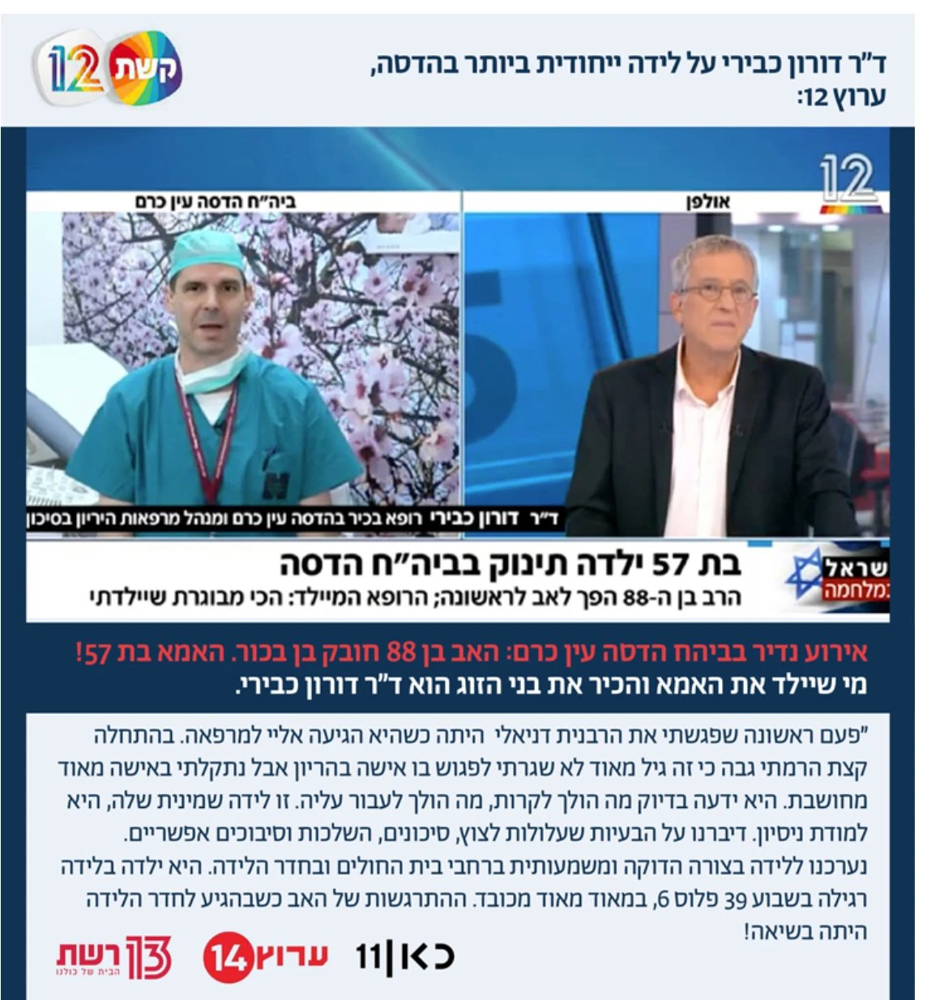

"הכי מבוגרת שיילדתי": בת 57 ילדה באופן טבעי בן בבית החולים הדסה

האישה הגיעה בשבוע ה-39 להריונה וילדה את בנה השמיני בלידה טבעית. האב, בן 88, חבק את בנו הבכור בהתרגשות עצומה.
"לא אשכח את זה לעולם": מקרה נדיר מאוד התרחש היום (ראשון) בבית החולים הדסה בירושלים, כשתינוק שמיני במספר נולד לאם בת 57, ואב בן 88. הרופא המיילד, שהכיר את הזוג, סיפר בריאיון ל"חמש" על מהלך ההיריון, ועל הלידה המרגשת, שעברה באופן טבעי בשבוע ה-39. לדבריו, האם הייתה האישה המבוגרת ביותר שיילד.
"אין הרבה לידות עם מהלך שכזה. אני לא אשכח אותה לעולם", מספר ד״ר דורון כבירי, רופא בכיר בהדסה ומנהל מחלקת היריון בסיכון בבית החולים.
"האימא הגיעה אליי בשבוע ה-12 לתחילת מעקב היריון, כמובן שבהתחלה קצת הרמתי גבה. נתקלתי באישה מאוד מיוחדת. היא ידעה בדיוק מה עומד לקרות. בפגישה הראשונה זו הייתה פגישת גישוש, כדי לראות לאן זה הולך. דיברנו על הסיבוכים האפשריים, על הצורך בהשגחה יתרה במהלך ההיריון עצמו, וגם על הלידה עצמה, שגם היא לא טריוויאלית".
ד"ר כבירי סיפר שבת ה-57 מאוד רצתה להביא לעולם את בנה בלידה רגילה: "אמרנו לה שכל עוד זה בטיחותי לה וליילוד אנחנו נאפשר את זה, ונערכנו לזה באופן מאוד משמעותי". לבסוף, הלידה התרחשה בשבוע ה-39 ושישה ימים באופן טבעי, כך שרצונה של היולדת אכן התממש.
לדברי הרופא המיילד, התרגשות רבה אחזה באב בן ה-88 שזהו בנו הראשון, כשהגיע לחדר הלידה. "זה היה מכל הכיוונים. הלידה הייתה מקסימה, כמו שכל יולדת הייתה רוצה לבקש, מההתחלה ועד הסוף".